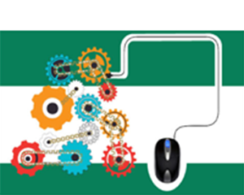

Innovation 2020 – The Connected Service TechnicianThis white paper sponsored by Alcatel Lucent discusses the New Zealand market testing of the connected service vehicle (CSV). Learn how Apptricity Field Services played an integral role in a trial of an integrated platform intended to accelerate the installation of a nation-wide gigabit broadband network by increasing efficiencies and reducing costs. |
It's 10PM: Do You Know Where Your Assets Are? Enhancing ROI with RFID TrackingMany organizations that make decisions regarding asset management are doing so based on inaccuracy. |

6 Ways to Ensure Your Company Has True Supply Chain Execution ConvergenceIn order to help you make sense of the new generation of enterprise technology, we've compiled this list of 6 ways to ensure your organization has true supply chain execution convergence. |
| Read More | Read More | Read More |
Pressure to be Green: Enterprise Software That Contributes to the Reduction of Greenhouse Gas EmissionsCreating a corporate culture focused on the reduction of greenhouse gas emissions is paramount to success in this decade and beyond. This white paper discusses environmental issues impacting enterprises today. |
3 Ways Mobile Supply Chain Solutions Make a DifferenceIn this White Paper we'll cover 3 ways mobile supply chain management solutions can improve operational efficiency through control and visibility of drivers in the field, route and work order schedules, mobile assets, etc. |
Trends in Invoice Management Automation and SourcingWhy you should care who processes your invoices. This white paper explores the advantages and disadvantages of outsourcing or insourcing and seeks to offer alternatives to enterprises engaging off-shore solution providers. |
| Read More | Read More | Read More |